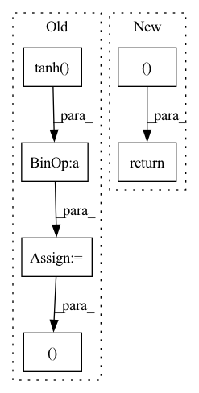

Pattern ID :5551

Before Change
hidden_with_time_axis = hidden.permute(1, 0, 2)
print("HiddenTimeaxis:", hidden_with_time_axis.shape)
// score: (batch_size, max_length, hidden_dim)
score = torch.tanh(self.W1(enc_output) + self.W2(hidden_with_time_axis))
// attention_weights shape == (batch_size, max_length, 1)
// we get 1 at the last axis because we are applying score to self.V
attention_weights = torch.softmax(self.V(score), dim=1)
// context_vector shape after sum == (batch_size, hidden_dim)
context_vector = attention_weights * enc_output
context_vector = torch.sum(context_vector, dim=1)
// context_vector: batch_size, 1, hidden_dim
context_vector = context_vector.unsqueeze(1)
//// -------------------------
// x shape after embedding == (batch_size, 1, dec_embed_dim)
x = self.embedding(x)
// x shape after concatenation == (batch_size, 1, dec_embed_dim + hidden_size)
x = torch.cat((context_vector, x), -1)
// passing the concatenated vector to the GRU
// output: (batch_size, 1, hidden_size)
After Change
// output shape == (batch_size * 1, output_dim)
output = self.fc(output)
return output, hidden
class Seq2Seq(nn.Module):
def __init__(self, encoder, decoder, device,
In pattern: SUPERPATTERN
Frequency: 3
Non-data size: 6
Instances
Fragment ID: 19577147
Project Name: ai4bharat/indiannlp-transliteration
Commit Name: 362bfb7c7db016b89d292d207391627d0d2d3006
Time: 2020-03-25
Author: josephgeobenjamin@gmail.com
File Name: algorithms/recurrent_nets.py
M Class Name: Decoder
N Class Name: Decoder
M Method Name: forward(4)
N Method Name: forward(4)
M Parent Class: nn.Module
N Parent Class: nn.Module
M File Name: algorithms/recurrent_nets.py
N File Name: algorithms/recurrent_nets.py
M Start Line: 81
M End Line: 115
N Start Line: 116
N End Line: 132
'>
Before Change
logp_pi = torch.unsqueeze(logp_pi, dim=1)
action = self.max_action * torch.tanh(action)
mu = torch.tanh(mu) * self.max_action
return action, logp_pi, mu
def get_log_density(self, state, action):
a = F.relu(self.fc1(state))
a = F.relu(self.fc2(a))
After Change
a_dist, a_tanh_mode = self._get_outputs(state)
action = a_dist.rsample()
logp_pi = a_dist.log_prob(action).sum(axis=-1)
return action, logp_pi, a_tanh_mode
def get_log_density(self, state, action):
a_dist, _ = self._get_outputs(state)
action_clip = torch.clip(action, -1. + EPS, 1. - EPS)
'>
Fragment ID: 19577144
Project Name: ryanxhr/dwbc
Commit Name: b3791e408af7125fde12cda1cdeaefbaa400aacc
Time: 2022-06-30
Author: xuhaoran8@jd.com
File Name: algos/DWBC.py
M Class Name: Actor
N Class Name: Actor
M Method Name: forward(2)
N Method Name: forward(2)
M Parent Class: nn.Module
N Parent Class: nn.Module
M File Name: algos/DWBC.py
N File Name: algos/DWBC.py
M Start Line: 35
M End Line: 52
N Start Line: 51
N End Line: 54
'>
Before Change
def forward(self, state, action=None):
a = t.relu(self.fc1(state))
a = t.relu(self.fc2(a))
a_mu = t.tanh(self.mu_head(a)) * self.action_range
a_sigma = softplus(self.sigma_head(a))
a_dist = Normal(a_mu, a_sigma)
a = action if action is not None else a_dist.sample()
a_entropy = a_dist.entropy()
a_log_prob = a_dist.log_prob(a)
return a, a_log_prob, a_entropy
// class Actor(nn.Module):
// def __init__(self, state_dim, action_num):
After Change
act = (action if action is not None else dist.sample())
act_entropy = dist.entropy()
act_log_prob = dist.log_prob(act)
return act, act_log_prob, act_entropy
class Critic(nn.Module):
def __init__(self, state_dim):
'>
Fragment ID: 19577150
Project Name: iffix/machin
Commit Name: 89695fab2bc63909df0f8994bac2700f121a9b62
Time: 2020-06-16
Author: hanhanmumuqq@163.com
File Name: test/frame/algorithms/test_ppo.py
M Class Name: Actor
N Class Name: Actor
M Method Name: forward(3)
N Method Name: forward(3)
M Parent Class: nn.Module
N Parent Class: nn.Module
M File Name: test/frame/algorithms/test_ppo.py
N File Name: test/frame/algorithms/test_ppo.py
M Start Line: 30
M End Line: 37
N Start Line: 27
N End Line: 33